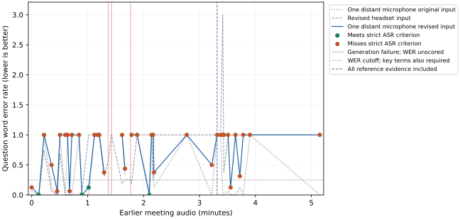
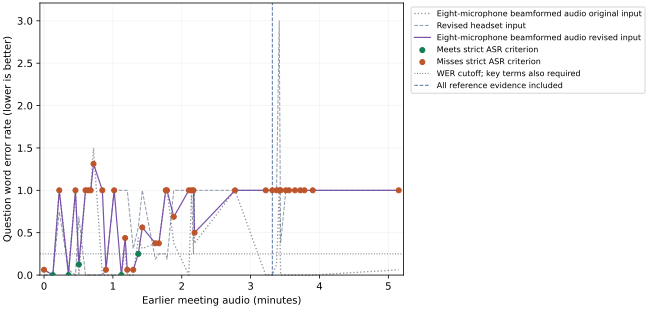
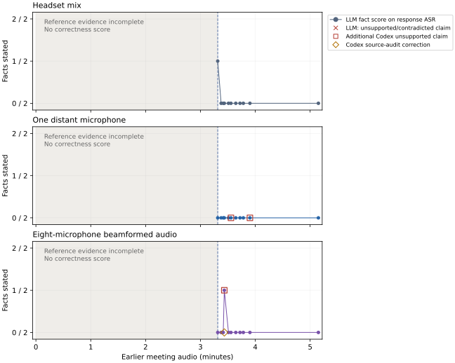

Automatic speech recognition (ASR) produces a transcript. Word error rate (WER) measures transcription errors; answer content is checked separately below.
Applied the acoustic revision to all 105 primary questions and six published voice alternatives; all 123 microphone/context positions are fresh attempts.
Headset mix: 13/41 scored contexts pass the frozen question-ASR rule; 0 generation failures are unscored.
One distant microphone: 4/38 scored contexts pass the frozen question-ASR rule; 3 generation failures are unscored.
Eight-microphone beamformed audio: 5/41 scored contexts pass the frozen question-ASR rule; 0 generation failures are unscored.
Each question uses past-only acoustic calibration. Spectral equalization (EQ) adjusts frequency balance. Some bank clips use identity EQ because no earlier paired requester reference is available. Background that failed the first ASR screening is replaced with stationary noise matching a measured past quiet-frame spectrum and root-mean-square (RMS) audio level, avoiding replay of source words. These ASR-guided choices do not establish human naturalness. The accepted P01 input uses actual earlier room tone and is unchanged from the listening preview.
Revised microphone comparisons across 41 context lengths
The same P01 question is replayed after zero to 309.03 seconds of preceding TS3006c audio. Source boundaries, the native 480 ms packet loop, prompt, greedy decoding, untrimmed history and the 40-packet answer window (19.2 seconds) stay fixed. Thinker, Talker, MTP and Code2Wav run with S2 disabled. The caller enables the first response at the known question end. These are nested contexts for one question, with one response per position. Forty silent input packets define a 19.2-second packet-clock answer window; generated speech duration can differ, and the replay is unpaced. This is an accuracy test, not a real-time latency measurement.
The mono Headset mix, one raw distant channel (Array1-01), and the released mono eight-microphone beamformed signal (MDM8) keep their original context gains. The raw and beamformed gains are +16.52 dB and −6.00 dB. Each source channel now continues to the insertion boundary, without switching to a headset tail. Question speech is matched separately to each microphone condition; its level and EQ are baked into the WAV, with no additional runtime gain. Question packets are byte-identical across lengths within a condition, while their waveforms differ between conditions.
AMI subset: these are selected question-bank meetings, not a named official ASR split. The original pilot uses mono Mix-Headset for TS3006c (scenario meeting) and EN2004a (non-scenario meeting). This three-signal sweep uses TS3006c only. The released MDM8 beamforming is offline and may use later-recording statistics. Recording provenance · Official signal documentation.
Table 1. All 41 contexts per signal were attempted; incomplete generations remain unscored. Response-content scoring requires complete reference evidence.Scroll sideways on a narrow screen.
Signal
Strict question-ASR passes
LLM complete spoken answers
Source-reviewed complete spoken answers
Headset mix
13/41
0/11
0/11
One distant microphone
4/38
0/11
0/11
Eight-microphone beamformed audio
5/41
0/11
0/11
Revised inputs and fresh model responses
Compare the same TS3006c excerpts using the fixed gains from the experiment. Every response here was rerun with the revised audio. Each card has earlier meeting evidence, the immediate context plus its microphone-matched synthetic question, and the actual model response at level 30 (198.91 seconds of preceding audio). The input demos are short excerpts from that context.
Headset mix
Earlier meeting evidence · source 110.12–140.00 s
Immediate context + question · source 291.03 s onward
Actual model response · level 30
Show response ASR
Parakeet transcript of this response: Yes, all presentations are in this shared folder. You can access them any time.
One distant microphone
Earlier meeting evidence · source 110.12–140.00 s
Immediate context + question · source 291.03 s onward
Actual model response · level 30
Show response ASR
Parakeet transcript of this response: Let me check the group theory details for you.
Eight-microphone beamformed audio
Earlier meeting evidence · source 110.12–140.00 s
Immediate context + question · source 291.03 s onward
Actual model response · level 30
Show response ASR
Parakeet transcript of this response: Let me check the folder status for you.
Every response: select a recording setting and context length
Figure 1 and Figures 2–3 evaluate question transcription. Figure 4 evaluates response content. Here, “response ASR” means the independent Parakeet transcript of the audio the model actually generated. The question-ASR field and intended response text are shown separately below.
ASR of the actual spoken response
Question ASR · the metric in Figures 1–3Intended response text from S1
Figure 1. Headset mix question-ASR word error rate (WER) versus preceding-audio length. WER counts substituted, deleted and inserted words divided by the reference word count. Lower is better. These values use S1’s own recognized-question fields from the packet overlapping the cutoff through the first four post-question packets (1.92 seconds on the input clock), held fixed in both versions. Green requires WER at most 0.25 plus assistant, shared, folder, conceptual and design; this is a transcription criterion, not an answer-content score. Gaps denote failed recognition windows. The lighter dotted curve uses the preserved original input. SVG · PNG.

Figure 2. One distant microphone question-ASR word error rate (WER) versus preceding-audio length. WER counts substituted, deleted and inserted words divided by the reference word count. Lower is better. These values use S1’s own recognized-question fields from the packet overlapping the cutoff through the first four post-question packets (1.92 seconds on the input clock), held fixed in both versions. Green requires WER at most 0.25 plus assistant, shared, folder, conceptual and design; this is a transcription criterion, not an answer-content score. Gaps denote failed recognition windows. The lighter dotted curve uses the preserved original input. SVG · PNG.

Figure 3. Eight-microphone beamformed audio question-ASR word error rate (WER) versus preceding-audio length. WER counts substituted, deleted and inserted words divided by the reference word count. Lower is better. These values use S1’s own recognized-question fields from the packet overlapping the cutoff through the first four post-question packets (1.92 seconds on the input clock), held fixed in both versions. Green requires WER at most 0.25 plus assistant, shared, folder, conceptual and design; this is a transcription criterion, not an answer-content score. Gaps denote failed recognition windows. The lighter dotted curve uses the preserved original input. SVG · PNG.
Figure 4: evaluate the generated responses
Independent Parakeet ASR transcribes the actual generated response WAV. The qualified local Qwen3-30B-A3B-Instruct-2507 judge checks whether the response states two source facts: the files were in the shared folder, and the particular file was the components-design PowerPoint. Both facts come from C’s statements; fact coverage here does not separately score speaker attribution. It scores each fact using the candidate answer alone, then checks material unsupported claims against source passages. It receives no microphone label, context length or question-ASR result. Codex separately reviews every eligible response transcript against the source. This is not an independent human rating.
The plotted fact score is the fraction of these two facts stated. Full correctness additionally requires no material unsupported claim. Only levels 30–40 contain all reference evidence; shorter contexts and failed responses have no correctness score. The LLM and source review differ on 3 eligible responses; both judgments remain visible. ASR errors can affect content scores.

Figure 4. LLM-scored facts in actual spoken responses. Red crosses mark LLM-flagged unsupported claims, open red squares mark additional source-review claims, and hollow diamonds mark fact-score corrections. Incomplete evidence is shaded and unscored. One response per position; no confidence interval or general robustness claim. SVG · PNG.
What the revised results suggest
The revised inputs produce 0 complete source-grounded answers among 33 eligible spoken responses; 1 response states exactly one of the two required facts, and 3 responses contain a material unsupported claim. These figures describe this one question and the recorded answer window.
Strict question-ASR passes change from original to revised input as follows: Headset mix 12/41 to 13/41; One distant microphone 18/38 to 4/38; Eight-microphone beamformed audio 21/41 to 5/41. The earlier array-condition recognition advantage does not carry over in this one-question rerun. These counts are context positions, not independent questions or repeated trials.
The local judge and Codex source comparison disagree on 3/33 responses: 1 fact-score difference and 3 material-claim differences, which can overlap within a response. These are reviewer disagreements, not an independent human accuracy estimate. Passing authored qualification checks does not validate the full-bank scorer.
In the preserved original-input control, 17 eligible responses follow strict question-ASR passes, but 0 are complete grounded answers. Those original runs already expose an answer deficit beyond accurate transcription of the final question; the current revision is a separate acoustic condition.
No eligible response follows a strict question-ASR pass. That binary label alone cannot cleanly separate earlier-fact use from question-perception or wake-word errors; low-WER cases need inspection rather than being treated as wholly unrecognized. The original-input comparison remains a distinct control.
A low-WER eligible example is distant_01-L35: question ASR "What is the status of the shared folder after we couldn't find the conceptual design files?" (WER 0.1250), with 0/2 source facts in the actual response transcript. Its strict recognition flag is False; an omitted wake word can fail that flag even when most question content is transcribed. This is a useful diagnostic case, not proof that all question-perception or triggering confounds are eliminated.
There is no observed complete-answer quality elbow: the responses already fail full correctness at the shortest context containing all reference evidence. A recognition drop can be described, but it is not a measured transition from correct to incorrect grounded answers.
Some longer prefixes return to WER at most 0.25 after an earlier higher-error prefix. The table separates first misses, later low-WER contexts and any sustained high-WER tail. These are descriptive observations for one question, not a calibrated context-capacity threshold.
The strict label also depends on particular words: distant_01 request-only ASR is "A system. What's the status of the shared folder after we couldn't find the conceptual design files?" (WER 0.1250); beamformed_mdm8 request-only ASR is 'Assistant, what\'s the status of the "Share Folder" after we couldn\'t find the conceptual design files?' (WER 0.0625). These low-WER strict misses illustrate why a keyword failure alone is not a response-quality elbow.
The comparison with preserved original-input results changes room tone, question level, spectral EQ and the array-to-question boundary together. It does not isolate a single acoustic mechanism or establish a general beamforming benefit.
Table 2. Descriptive question-recognition changes, not estimated memory-capacity thresholds.Scroll sideways on a narrow screen.
Signal
First WER above 0.25
Later WER ≤ 0.25 contexts
Last WER ≤ 0.25 context
Sustained higher-WER tail
Headset mix
13.27 s
13
130.20 s
131.16 s onward; 14 scored contexts
One distant microphone
13.27 s
6
213.37 s
218.65 s onward; 5 scored contexts
Eight-microphone beamformed audio
13.27 s
7
82.14 s
85.60 s onward; 23 scored contexts
All answer-eligible contexts retain the same final reference fact at 136.44 seconds; the question begins at 309.21 seconds, a fixed 172.77-second gap. This experiment varies additional earlier context, not the delay after a fact. Level 40 additionally includes 74.89 seconds of initial recording silence. Multiple questions, repeated trials and controlled fact-to-question delays are needed for a defensible response-quality elbow.
Question-transition measurements, noise-only controls and resources
Frame root-mean-square (RMS) level measures average signal amplitude in 20 ms windows. Decibels relative to full scale (dBFS) express that level relative to maximum digital amplitude; more negative values are quieter. The dotted line at zero seconds marks the end of original source audio and start of the insertion. The plot floors silence at −100 dBFS for display.
Figure 5. Original and revised input amplitude around the splice. The revision combines channel-continuous source audio, recorded room tone, measured speech level and bounded EQ; it is not a single-factor accuracy experiment. SVG · PNG.
Headset mix background-only control: external ASR returns no words.
One distant microphone background-only control: external ASR returns no words.
Eight-microphone beamformed audio background-only control: external ASR returns no words.
All original source-prefix samples are preserved after the existing fixed per-channel gain. Only past source audio and the existing synthetic question are used; reference-answer text is not part of the revised input. Original P01 input qualification, before this rerun: ASR job 1400195 used one L40S 48 GB: Parakeet on GPU 0, reused sequentially with no S1/TTS/S2/judge sharing; CPU preparation and source checks came first. Maximum one GPU active, currently zero. Allocation 37 seconds / 0.010278 GPU hours; offline throughput 1.529 seconds of audio per allocation-second, not response latency.
Scope: one speaker, one question and one meeting; the spectral comparison was a development check, and no independent human listening rating was collected. Checksums.
Every context length, response transcript, score and audioHeadset mix
Table 3. Headset mix exact revised results.Scroll sideways on a narrow screen.
Question ASR: Assistant, what's the status of the shared folder after we couldn't find the conceptual design files?
Actual response ASR: Let me the folder status for you. The folder is still there, but the files are missing. I can help you create a new folder and upload the files if you have them.
Native intended text: Let me check the folder status for you. The folder is still there, but the files are missing. I can help you create a new folder and upload the files if you have them.
Level 1 · 7.67 s
Question ASR: Assistant, what's the status of the shared folder after we couldn't find the conceptual design files?
Actual response ASR: Let me book holdo folder status for you.
Native intended text: Let me check the shared folder status for you.
Level 2 · 13.27 s
Question ASR: Assistant, what's the status of the share folder? After we couldn't find the conceptual design file, I need to know if the share folder is ready.
Actual response ASR: Let me check the share folder status for you. One moment, please.
Native intended text: Let me check the share folder status for you. One moment please.
Level 3 · 21.29 s
Question ASR: assistant, what's the status of the share folder after we couldn't find the conceptual design files?
Actual response ASR: Let me check the status of the shared folder and the conceptual design files for you.
Native intended text: Let me check the status of the shared folder and the conceptual design files for you.
Level 4 · 27.38 s
Question ASR: Assistant, what's the status of the shared folder after we couldn't find the conceptual design files?
Actual response ASR: The shared folder status for you. The files are still there, but the folder is locked due to a version conflict. I can unlock it for you now.
Native intended text: Let me check the shared folder status for you. The files are still there, but the folder is locked due to a version conflict. I can unlock it for you now.
Level 5 · 30.32 s
Question ASR: Assistant, what's the status of the share folder? After we couldn't find the conceptual design file, I need to know if the folder is ready.
Actual response ASR: I UD Your Concern. The share folder is ready. The conceptual design file is Ather Belay.
Native intended text: I understand your concern. The share folder is ready. The conceptual design file is in the folder now.
Level 6 · 36.13 s
Question ASR: Assistant, what's the status of the shared folder after we couldn't find the conceptual design files?
Actual response ASR: Let me the the shared folder status for you. One moment, please.
Native intended text: Let me check the shared folder status for you. One moment, please.
Level 7 · 38.47 s
Question ASR: Assistant, what's the status of the shared folder after we couldn't find the conceptual design files?
Actual response ASR: Met meet the shared folder is status for you. One moment, please.
Native intended text: Let me check the shared folder status for you. One moment, please.
Level 8 · 40.66 s
Question ASR: Assistant, what's the status of the shared folder after we couldn't find the conceptual design files?
Actual response ASR: Let me the shared folder status for you. The folder is still h there, but the files are missing. I can help you restore them with your need.
Native intended text: Let me check the shared folder status for you. The folder is still there, but the files are missing. I can help you restore them if you need.
Level 9 · 43.10 s
Question ASR: assistant, what's the status of the shared folder after we couldn't find the conceptual design files?
Actual response ASR: Let me the shared folder status for you. The folder is currently empty. I can create a new one and invite you to it. Would you like me to do that?
Native intended text: Let me check the shared folder status for you. The folder is currently empty. I can create a new one and invite you to it. Would you like me to do that?
Level 10 · 50.80 s
Question ASR: Assistant, what's the status of the shared folder after we couldn't find the conceptual design files?
Actual response ASR: Let me the shared folder status for you. The folder is currently empty. I can create a new one and invite the team members to upload the files. Would you like me to proceed?
Native intended text: Let me check the shared folder status for you. The folder is currently empty. I can create a new one and invite the team members to upload the files. Would you like me to proceed?
Level 11 · 53.94 s
Question ASR: What's the status of the shared folder after we couldn't find the conceptual design files?
Actual response ASR: Let me the shared folder status for you. The files are still there, but the conceptual design files are missing. I can help you recreate them.
Native intended text: Let me check the shared folder status for you. The files are still there, but the conceptual design files are missing. I can help you recreate them.
Level 12 · 61.11 s
Question ASR: (empty)
Actual response ASR: So you think the fruit and vegetables team is the most important for clothing, shoes, and furniture? And you expect filtered material to be spongy? Is that correct?
Native intended text: I see. So you think the fruit and vegetables team is the most important for clothing, shoes, and furniture. And you expect filtered material to be spongy. Is that correct?
Level 13 · 67.35 s
Question ASR: (empty)
Actual response ASR: I understand you're asking about the trends for young public. Let me confirm you mentioned fruit and vegetable themes and spongy materials. Is that correct?
Native intended text: I understand you're asking about the trends for young public. Let me confirm: you mentioned fruit and vegetable themes and spongy materials. Is that correct?
Level 14 · 70.67 s
Question ASR: (empty)
Actual response ASR: Let think about that. For young public, the most important aspect is the look and feel, which should be fun and educational. The second most important aspect is the our remote control, which should be technological and innovative. The third most important aspect is the use of technical features.
Native intended text: Let me think about that. For young public, the most important aspect is the look and feel, which should be fun and educational. The second most important aspect is the remote control, which should be technological and innovative. The third most important aspect is the use of technical features,
Level 15 · 72.53 s
Question ASR: (empty)
Actual response ASR: Let's check the late indust for you. One moment, please.
Native intended text: Let me check the latest industry trends for you. One moment please.
Level 16 · 77.72 s
Question ASR: assistant what's the status of the shared folder, after we couldn't find the conceptual design file, um, well, and the
Actual response ASR: I Well, your concerns. Let me address the shared folder APSHU first. The conceptual cool design file OBARRAD is currently in the shared folder under the project folder. You can access it now.
Native intended text: I understand your concerns. Let me address the shared folder issue first. The conceptual design file is currently in the shared folder under the project folder. You can access it now.
Level 17 · 82.14 s
Question ASR: assistant what's the status of the shared folder, after we couldn't find the conceptual design file, and I think we need to move forward.
Actual response ASR: Mean confirm the key points from your message. You mentioned the fruit and vegetable theme and the shared folder status. Is that correct?
Native intended text: Yes, I'm here. Let me confirm the key points from your message. You mentioned the fruit and vegetable theme and the shared folder status. Is that correct?
Level 18 · 85.60 s
Question ASR: (empty)
Actual response ASR: See, it's a trend trend watching. What would you like to know?
Native intended text: Yes, it's about trend watching. What would you like to know?
Level 19 · 96.97 s
Question ASR: assistant what's the status of the shared folder, after we couldn't find the conceptual design file, um, assistant?
Actual response ASR: Let me check the shared folder status for you. One moment, please.
Native intended text: Let me check the shared folder status for you. One moment, please.
Level 20 · 100.06 s
Question ASR: assistant what's the status of the shared folder, after we couldn't find the conceptual design files, um, well, the assistant
Actual response ASR: Let me check the Hide Starter status for you. One moment, please.
Native intended text: Let me check the shared folder status for you. One moment please.
Level 21 · 106.04 s
Question ASR: assistant what's the status of the shared folder, after we couldn't find the conceptual design files, um, well, the shared
Actual response ASR: Bohala, let's check the cust folder status for you. One moment, please.
Native intended text: Hello, let me check the shared folder status for you. One moment please.
Level 22 · 107.14 s
Question ASR: assistant what's the status of the shared folder, after we couldn't find the conceptual design file, um, assistant?
Actual response ASR: Thanks for sitth the update. Let me check the shared folder status for you. One moment, please.
Native intended text: Thanks for the update. Let me check the shared folder status for you. One moment please.
Level 23 · 113.05 s
Question ASR: (empty)
Actual response ASR: Let me check the notes on that. Give me a sec.
Native intended text: Sure, let me check the notes on that. Give me a sec.
Level 24 · 126.19 s
Question ASR: (empty)
Actual response ASR: All right, let me check the Daruma remote control history you. Give me a moment.
Native intended text: Alright, let me check the remote control history for you. Give me a moment.
Level 25 · 128.58 s
Question ASR: (empty)
Actual response ASR: I can help with that. Let me start by outlining the key concepts for the mobile phone remote control. The first concept is the most important aspect for the remote control, which is the fancy look and feel instead of the current functional look and feel. The second concept is the second most important aspect.
Native intended text: Sure, I can help with that. Let me start by outlining the key concepts for the mobile phone remote control. The first concept is the most important aspect for the remote control, which is the fancy look and feel, instead of the current functional look and feel. The second concept is the second most important aspect,
Level 26 · 130.20 s
Question ASR: assistant what's the status of the shared folder after we couldn't find the conceptual design files uh well the files
Actual response ASR: Well, the presentation is about trend watching and the remote control concepts. Regarding the shared folder, I can help you check the status. Could you tell me the folder name in the project name so I can hell it up?
Native intended text: I understand the presentation is about trend watching and the remote control concepts. Regarding the shared folder, I can help you check the status. Could you tell me the folder name or the project name so I can look it up?
Level 27 · 131.16 s
Question ASR: (empty)
Actual response ASR: Yes, I'm here. What would you like to know?
Native intended text: Yes, I'm here. What would you like to know?
Level 28 · 166.40 s
Question ASR: (empty)
Actual response ASR: Got it. Let me quickly check the specific requirements for the WIP PowerPoint part.
Native intended text: Got it. Let me quickly check the specific requirements for the PowerPoint part.
Level 29 · 193.17 s
Question ASR: (empty)
Actual response ASR: Got it? Let me check the folder permissions for you.
Native intended text: Got it. Let me check the folder permissions for you.
Level 30 · 198.91 s
Question ASR: (empty)
Actual response ASR: Yes, all presentations are in this shared folder. You can access them any time.
Native intended text: Yes, all presentations are in the shared folder. You can access them anytime.
States that the presentations are in the shared folder, consistent with the recorded placement/location fact. It does not identify the components-design PowerPoint. Generic access advice adds no missing identity fact; no completed lookup or contradictory folder state is claimed.
Level 31 · 202.62 s
Question ASR: (empty)
Actual response ASR: Got it. Let me pull up the conceptual design file from the shared folder for you.
Native intended text: Got it. Let me pull up the conceptual design file from the shared folder for you.
Offers to pull up the conceptual-design file from the shared folder, but does not report that the missing files were put there or identify the components-design PowerPoint. The frozen rubric treats retrieval offers as no affirmative source-fact report; the named location is a presupposition of the offer, not a confirmed status.
Level 32 · 204.93 s
Question ASR: development so the development so the development so the development so the development so the development so the development so the development so the development so the development so the development so the development so the development so the development so the development so the development so the development so the
Actual response ASR: Got it. Let me check the shared folder permissions and the design progress for you.
Native intended text: Got it. Let me check the shared folder permissions and the design progress for you.
Offers to check shared-folder permissions and design progress, but states neither file placement/location nor the components-design PowerPoint identity. No completed check or permission failure is claimed.
Level 33 · 206.11 s
Question ASR: assistant what's the status of the shared folder after we couldn't find it consult design files and um the assistant
Actual response ASR: God, let me pull up the previous version for you. Give me a sec.
Native intended text: Got it. Let me pull up the previous version for you. Give me a sec.
Offers to pull up a previous version and asks for a second. It does not report where the missing presentations were placed or identify the components-design PowerPoint.
Level 34 · 210.68 s
Question ASR: (empty)
Actual response ASR: Ike help with that. What specifically do you need to go back to?
Native intended text: Sure, I can help with that. What specifically do you need to go back to?
Asks what the user needs to go back to, without giving either required meeting fact.
Level 35 · 213.37 s
Question ASR: (empty)
Actual response ASR: Got it. Let me check the chaired folder permissions and the conceptual design requirements for you.
Native intended text: Got it. Let me check the shared folder permissions and the conceptual design requirements for you.
Offers to check folder permissions and conceptual-design requirements, but does not state that files were placed in the shared folder or identify the components-design PowerPoint. It does not claim the check was completed.
Level 36 · 218.65 s
Question ASR: (empty)
Actual response ASR: Let me recall the details. The conceptual design components include the product concept, user needs, and technical specifications. Would you like me to elaborate on any of these?
Native intended text: Sure, let me recall the details. The conceptual design components include the product concept, user needs, and technical specifications. Would you like me to elaborate on any of these?
Gives a generic account of conceptual-design components (product concept, user needs and technical specifications) instead of locating the recorded files or identifying the components-design PowerPoint. The generic explanation is off-topic rather than a material meeting file/folder-status assertion; neither required fact is stated.
Level 37 · 223.29 s
Question ASR: (empty)
Actual response ASR: Okay, let me check the constop joel design question for you. A, one moment.
Native intended text: Okay, let me check the conceptual design question for you. One moment.
Offers to check the conceptual-design question and asks for a moment. Neither required meeting fact is given; the audio transcript also garbles conceptual design.
Level 38 · 226.90 s
Question ASR: (empty)
Actual response ASR: Okay, so the quest is about PowerPoint components design. The main components are the title slide, content slides, and the conclusion slide. For the title slide, you want to clear title and subtitle. For content slides, use the bullet points and images. For the conclusion, summary.
Native intended text: Okay, so the question is about PowerPoint components design. The main components are the title slide, content slides, and the conclusion slide. For the title slide, you want a clear title and subtitle. For content slides, use bullet points and images. For the conclusion, summarize
Mentions PowerPoint components design as the topic, then gives generic advice about title, content and conclusion slides. It never identifies a particular recorded file/presentation as the components-design PowerPoint and gives no shared-folder location. Matching source words alone is not an explicit file-identification fact.
Level 39 · 234.14 s
Question ASR: (empty)
Actual response ASR: Got it. So you wanted to switch to English and focus on the remote control concepts first? Let me confirm. You want to discuss the mobile phone and remote control requirements now, correct?
Native intended text: Got it. So you want to switch to English and focus on the remote control concepts first. Let me confirm: you want to discuss the mobile phone and remote control requirements now, correct?
Confirms a supposed switch to English and discussion of remote-control/mobile-phone concepts. It does not answer the file/folder question or state either required fact. The response is off-topic; these confirmation questions do not themselves establish a false file/folder-status assertion.
Level 40 · 309.03 s
Question ASR: (empty)
Actual response ASR: Do prop. Take your time. What exactly do you need translated?
Native intended text: No problem, take your time. What exactly do you need translated?
Asks what needs translating, unrelated to the folder question; neither required source fact is stated. The native text has the same off-topic meaning despite the first phrase being garbled in response ASR.
One distant microphone
Table 4. One distant microphone exact revised results.Scroll sideways on a narrow screen.
Question ASR: A system. What's the status of the shared folder after we couldn't find the conceptual design files?
Actual response ASR: Let me check the shared folder status for you. One moment.
Native intended text: Let me check the shared folder status for you. One moment.
Level 1 · 7.67 s
Question ASR: Assistant, what's the status of the shared folder after we couldn't find the conceptual design files?
Actual response ASR: Let me check the folder status for you. The folder is still there, but the files are missing. I can help you recreate the design from scratch if you like.
Native intended text: Let me check the folder status for you. The folder is still there, but the files are missing. I can help you recreate the design from scratch if you like.
Level 2 · 13.27 s
Question ASR: (empty)
Actual response ASR: Let me check the decurrency model details for you. One moment, please.
Native intended text: Let me check the currency model details for you. One moment please.
Level 3 · 21.29 s
Question ASR: but assistant what's the status of the share folder after we couldn't find the conceptual design file I think we need to
Actual response ASR: I if think we your concern, Sarah folder is currently being retrieved from the system and the status is being updated in real time as the system processes the request. And also check the status of the updated in real time as the system processes the request and the status is being updated in real time as the rest of the system.
Native intended text: I understand your concern. The share folder is currently being retrieved from the system and the status is being updated in real time as the system processes the request and the status is being updated in real time as the system processes the request and the status is being updated in real time as the system
Level 4 · 27.38 s
Question ASR: What's the status of the shared folder after we couldn't find the conceptual design files?
Actual response ASR: Let me check the folder status for you. The folder is currently empty. I can help you create a new folder if you need.
Native intended text: Let me check the folder status for you. The folder is currently empty. I can help you create a new folder if you need.
Level 5 · 30.32 s
Question ASR: (empty)
Actual response ASR: Let me rephrase that for you. The second most important aspect is that it it moves control shifting technological innovations from the user experience. A more professional version would be the second most important aspect is that it removes control shifting technological innovations t from the user experience.
Native intended text: Sure. Let me rephrase that for you. The second most important aspect is that it removes control shifting technological innovations from the user experience. A more professional version would be: 'The second most important aspect is that it removes control shifting technological innovations from the user experience.'
Level 6 · 36.13 s
Question ASR: (empty)
Actual response ASR: I see. Do you want to user interface over the technical features? Let me think about how to approach this. First, we need to understand the current state of the app. What are the main technical features you have now?
Native intended text: I see. So you want to prioritize the user interface over the technical features. Let me think about how to approach this. First, we need to understand the current state of the app. What are the main technical features you have now?
Level 7 · 38.47 s
Question ASR: (empty)
Actual response ASR: I see. So you want to prioritize the user interface over the technical features. Let me confirm firm. Is that correct?
Native intended text: I see. So you want to prioritize the user interface over the technical features. Let me confirm: is that correct?
Level 8 · 40.66 s
Question ASR: What's the status of the shared folder after we couldn't find the conceptual design files?
Actual response ASR: Let me the folder status for you. The folder is currently empty. Would you like me to create a new folder for the conceptual design files?
Native intended text: Let me check the folder status for you. The folder is currently empty. Would you like me to create a new folder for the conceptual design files?
Level 9 · 43.10 s
Question ASR: (empty)
Actual response ASR: Hi, let me check the current security measures for you. One moment, please.
Native intended text: I understand. Let me check the current security measures for you. One moment, please.
Level 10 · 50.80 s
Question ASR: (empty)
Actual response ASR: I can help with that. To give you a tailor idea, could you tell me what specific features you have in mind?
Native intended text: Sure, I can help with that. To give you a tailored idea, could you tell me what specific features you have in mind?
Level 11 · 53.94 s
Question ASR: Assistant, what's the status of the shared folder after we couldn't find the conceptual design files?
Actual response ASR: Let me the shared folder status for you. The files are still there, but the conceptual design files are missing. I can help you recreate them.
Native intended text: Let me check the shared folder status for you. The files are still there, but the conceptual design files are missing. I can help you recreate them.
Level 12 · 61.11 s
Question ASR: Assistant what is the status of the shared folder after we couldn't find the conceptual design files
Actual response ASR: Stand. Your concerns. Let me address the shared folder issue first. The folder is still accessible, but the conceptual design files are missing. I can help you locate them or recreate them if needed.
Native intended text: I understand your concerns. Let me address the shared folder issue first. The folder is still accessible, but the conceptual design files are missing. I can help you locate them or recreate them if needed.
Level 13 · 67.35 s
Question ASR: (empty)
Actual response ASR: Let's check DES standard procedure for eCompromise. The first step is to dash key compromised key and new one. Do you have access to the key management system?
Native intended text: Let me check the standard procedure for key compromise. The first step is to revoke the compromised key and generate a new one. Do you have access to the key management system?
Level 14 · 70.67 s
Question ASR: (empty)
Actual response ASR: Understand your concern. Let me clarify the situation. The system has detected a potential transfer of your public data to a public location. Could you tell me which specific data or folder is involved?
Native intended text: I understand your concern. Let me clarify the situation. The system has detected a potential transfer of your public data to a public location. Could you tell me which specific data or folder is involved?
Level 15 · 72.53 s
Question ASR: (empty)
Actual response ASR: I can help with that. To give you the most relevant information, could you tell me which specific area you're most interested in? For example, the most important aspect for remote control, the second most important aspect, or the technical features of the remote control system?
Native intended text: Sure, I can help with that. To give you the most relevant information, could you tell me which specific area you're most interested in? For example, the most important aspect for remote control, the second most important aspect, or the technical features of the remote control system?
Level 16 · 77.72 s
Question ASR: and assistant what's the status of the shared folder after we couldn't find the conceptual design file and um, well the
Actual response ASR: I your questions. Let me start with the first one. The transfers are publicly visible on the blockchain, so anyone can see them. Regarding the fruit and vegetable development, the most important aspect is the original look and feel of the interface. The second most important aspect is the
Native intended text: I understand your questions. Let me start with the first one. The transfers are publicly visible on the blockchain, so anyone can see them. Regarding the fruit and vegetable development, the most important aspect is the original look and feel of the interface. The second most important aspect is the
Level 17 · 82.14 s
Question ASR: (empty)
Unscored execution: RuntimeError: Output truncated; not a recognition failure
Level 18 · 85.60 s
Question ASR: (empty)
Unscored execution: RuntimeError: Output truncated; not a recognition failure
Level 19 · 96.97 s
Question ASR: (empty)
Actual response ASR: Let me check the details on that trend watching presentation for you.
Native intended text: Let me check the details on that trend watching presentation for you.
Level 20 · 100.06 s
Question ASR: Assistant what's the status of the shared folder? After we couldn't find the conceptual design file, I decided to create a new
Actual response ASR: I opt decided to your concern. The shared folder is currently being synced to the server. It should be available in a few minutes. Would you like me to check the status now?
Native intended text: I understand your concern. The shared folder is currently being synced to the server. It should be available in a few minutes. Would you like me to check the status now?
Level 21 · 106.04 s
Question ASR: (empty)
Unscored execution: RuntimeError: Output truncated; not a recognition failure
Level 22 · 107.14 s
Question ASR: (empty)
Actual response ASR: Let me check the details on that for you.
Native intended text: Let me check the details on that for you.
Level 23 · 113.05 s
Question ASR: (empty)
Actual response ASR: Let me pull up the previous notes on that for you.
Native intended text: Sure, let me pull up the previous notes on that for you.
Level 24 · 126.19 s
Question ASR: Assistant, what’s the status of the shared folder after we couldn't find the conceptual design files?
Actual response ASR: Understand your concern. The shared folder is currently empty because the conceptual design files were not uploaded. It can help you create a new folder and upload the files if you provide them.
Native intended text: I understand your concern. The shared folder is currently empty because the conceptual design files were not uploaded. I can help you create a new folder and upload the files if you provide them.
Level 25 · 128.58 s
Question ASR: (empty)
Actual response ASR: Sure, I can help with that. To make sure I get it right, could you tell me which specific sections you want included? For example, the problem statement, the solution, the market analysis, and the conclusion?
Native intended text: Sure, I can help with that. To make sure I get it right, could you tell me which specific sections you want included? For example, the problem statement, the solution, the market analysis, and the conclusion?
Level 26 · 130.20 s
Question ASR: (empty)
Actual response ASR: Go ahead. Listening.
Native intended text: Sure, go ahead. I'm listening.
Level 27 · 131.16 s
Question ASR: and assistant what's the status of the shared folder after we couldn't find the conceptual design file and well the conceptual
Actual response ASR: Got it. Let me check the records from that time. Give me a moment.
Native intended text: Got it. Let me check the records from that time. Give me a moment.
Level 28 · 166.40 s
Question ASR: (empty)
Actual response ASR: Got it. Three quartet themes and are facing issues with pop-ups, PowerPoint, and time management. Let me help you with the pop-ups first. What kind of pop-ups are you seeing?
Native intended text: Got it. So you have three quartet themes and are facing issues with pop-ups, PowerPoint, and time management. Let me help you with the pop-ups first. What kind of pop-ups are you seeing?
Level 29 · 193.17 s
Question ASR: share folder after I couldn't find the conceptual design files.
Actual response ASR: Got it. Let me quickly verify the specific requirements for that election project.
Native intended text: Got it. Let me quickly verify the specific requirements for that election project.
Level 30 · 198.91 s
Question ASR: (empty)
Actual response ASR: Let me check the group theory details for you.
Native intended text: Let me check the group theory details for you.
Offers to check group-theory details, unrelated to the meeting files. Neither required fact appears in the native text or actual response transcript.
Level 31 · 202.62 s
Question ASR: (empty)
Actual response ASR: Buscart is a d designer who creates presentations for various topics. He has done work on conceptual design, remote control systems, and more.
Native intended text: Buzzy Oscar is a designer who creates presentations for various topics. He has done work on conceptual design, remote control systems, and more.
Gives a biography of an unnamed-in-source designer (Buscart in actual ASR, Buzzy Oscar in native intended text), not an answer about the folder. Neither required fact is stated. The biography is unsupported by the supplied passages; the frozen material-error flag concerns meeting files/folder status, so this unrelated biography is retained as an additional off-topic unsupported statement rather than scored as a folder-status error.
Level 32 · 204.93 s
Question ASR: (empty)
Actual response ASR: But to hear that, how can I help you today?
Native intended text: Glad to hear that. How can I help you today?
Only acknowledges and asks how to help; no folder-status answer or source fact is stated. The audio transcript also differs from the intended opening phrase.
Level 33 · 206.11 s
Question ASR: (empty)
Actual response ASR: Let me pull up the conceptual design details for you. Give me a moment.
Native intended text: Sure, let me pull up the conceptual design details for you. Give me a moment.
Offers to pull up conceptual-design details and asks for a moment. It gives no location fact or components-design PowerPoint identity and claims no completed lookup.
Level 34 · 210.68 s
Question ASR: (empty)
Actual response ASR: Sure, go ahead. What's the problem?
Native intended text: Sure, go ahead. What's the problem?
Invites the user to explain the problem; it does not answer the file/folder question or state either source fact.
Level 35 · 213.37 s
Question ASR: What is the status of the shared folder after we couldn't find the conceptual design files?
Actual response ASR: Checked the folder status for you. The folder is ready for review. I can send you the link if you need it.
Native intended text: Let me check the folder status for you. The folder is ready for review. I can send you the link if you need it.
Actual response ASR reports a completed folder-status check and says the folder is ready for review. The source establishes neither that assistant lookup nor a new ready-for-review status. Native text begins with an offer instead of Checked, an ASR discrepancy, but it still asserts the unsupported readiness status. Neither source fact is stated.
Level 36 · 218.65 s
Question ASR: (empty)
Actual response ASR: Sh. Let me check the previous conversation. The one before why was about Hi CO My Own presentations. Do you want to go back to that?
Native intended text: Sure, let me check the previous conversation. The one before that was about SEO my own presentations. Do you want to go back to that?
Asks whether the user wants to return to an earlier topic about my own presentations; SEO/Hi CO is a recognition/wording ambiguity. Neither C placing files in the shared folder nor the components-design file identity is stated.
Level 37 · 223.29 s
Question ASR: assistant what's the status of the shared folder after we couldn't find the conceptual design file and and and and
Actual response ASR: Let's check the low pro pro pro trade track low pro grow too.
Native intended text: Let me check the shared folder status for you. One moment, please.
Actual response ASR is garbled and does not state either fact. The native intended text is merely an offer to check the shared-folder status, so it also supplies neither fact. This is a transcript/intended-text discrepancy, not a verified human intelligibility rating.
Level 38 · 226.90 s
Question ASR: (empty)
Actual response ASR: Sure. Let me pull up the conceptual design PowerPoint for you. Give me a moment.
Native intended text: Sure, let me pull up the conceptual design PowerPoint for you. Give me a moment.
Offers to pull up a conceptual-design PowerPoint, without reporting its location or giving the recorded components-design identity. An uncompleted retrieval offer is not credited as a source-fact report; it does not claim that a lookup succeeded.
Level 39 · 234.14 s
Question ASR: (empty)
Actual response ASR: The pre was moved to 3 p.m. You can join the meeting now.
Native intended text: The presentation was moved to 3 PM. You can join the meeting now.
Asserts that something was moved to 3 p.m. and that the user can join the meeting now; the source passages establish neither rescheduling nor that current meeting state. The actual ASR garbles the presentation noun, but the unsupported time-change assertion remains. Neither required file/folder fact is given.
Level 40 · 309.03 s
Question ASR: (empty)
Actual response ASR: Hi, I'm your sister. How can I help you today?
Native intended text: Hi there, I'm your assistant. How can I help you today?
Only gives an introduction and asks how to help. The intended assistant role is rendered as sister in response ASR, but both versions miss the meeting question and both required facts.
Eight-microphone beamformed audio
Table 5. Eight-microphone beamformed audio exact revised results.Scroll sideways on a narrow screen.
Question ASR: Assistant, what's the status of the "Share Folder" after we couldn't find the conceptual design files?
Actual response ASR: Let me get the full stat status for you. One moment.
Native intended text: Let me check the folder status for you. One moment.
Level 1 · 7.67 s
Question ASR: Assistant, what's the status of the shared folder after we couldn't find the conceptual design files?
Actual response ASR: Let me check the shared folder status for you. The folder is still there, but the conceptual design files are missing. I can help you recreate them.
Native intended text: Let me check the shared folder status for you. The folder is still there, but the conceptual design files are missing. I can help you recreate them.
Level 2 · 13.27 s
Question ASR: (empty)
Actual response ASR: The key sense are sight, sound, touch, smell, and taste. For example, describing the crunch of leaves underfoot or the scent of rain can make a scene come alive.
Native intended text: The key senses are sight, sound, touch, smell, and taste. For example, describing the crunch of leaves underfoot or the scent of rain can make a scene come alive.
Level 3 · 21.29 s
Question ASR: Assistant, what's the status of the shared folder after we couldn't find the conceptual design files?
Actual response ASR: Let me check the share folder status for you. The folder is still there, but the files are not accessible. I can try to restore them from backup if you want.
Native intended text: Let me check the shared folder status for you. The folder is still there, but the files are not accessible. I can try to restore them from backup if you want.
Level 4 · 27.38 s
Question ASR: (empty)
Actual response ASR: N stand for Futuristic S is Instant for Natural Communication Interface. It's a concept for a future interface that uses voice and gesture control.
Native intended text: FANCI stands for Futuristic Assistant for Natural Communication Interface. It's a concept for a future interface that uses voice and gesture control.
Level 5 · 30.32 s
Question ASR: cover that. Assistant, what's the status of the shared folder after we couldn't find the conceptual design files?
Actual response ASR: Let me check the shared folder status for you. The folder is still empty. I can help you create a new one if you'd like.
Native intended text: Let me check the shared folder status for you. The folder is still empty. I can help you create a new one if you'd like.
Level 6 · 36.13 s
Question ASR: (empty)
Actual response ASR: That's a good question. Mimi, think about the key factors for remote control app development.
Native intended text: That's a good question. Let me think about the key factors for remote control app development.
Level 7 · 38.47 s
Question ASR: (empty)
Actual response ASR: Let me check the latest industry data on in remote control app efficiency to give you a precise answer.
Native intended text: Let me check the latest industry data on remote control app efficiency to give you a precise answer.
Level 8 · 40.66 s
Question ASR: (empty)
Actual response ASR: Let's check the Fabi documentation for that one moment.
Native intended text: Let me check the FABI documentation for that. One moment.
Level 9 · 43.10 s
Question ASR: experience, to make it easy to use, and the fifth most important aspect is the integration with other systems, to connect with
Actual response ASR: I s with other systems to connect with NAFDEX. Let me confirm you want me to reorder them by importance for FABI FNB Remote Control App. Correct?
Native intended text: I see you've listed five aspects. Let me confirm: you want me to reorder them by importance for the FABi F&B remote control app, correct?
Level 10 · 50.80 s
Question ASR: (empty)
Actual response ASR: The important aspect is the remote control system. It allows farmers to monitor and manage their fields from anywhere, which is crucial for efficiency and timely intervention.
Native intended text: The most important aspect is the remote control system. It allows farmers to monitor and manage their fields from anywhere, which is crucial for efficiency and timely intervention.
Level 11 · 53.94 s
Question ASR: What's the status of the shared folder after we couldn't find the conceptual design files?
Actual response ASR: Let me chug the shared folder status for you. The files are our they but but but but but
Native intended text: Let me check the shared folder status for you. The files are still there, but the folder is currently locked due to a version conflict. I can unlock it for you if you confirm you want to proceed.
Level 12 · 61.11 s
Question ASR: (empty)
Actual response ASR: Got it. Let me confirm the team assignments first. Fruit and vegetables for clothing, shoes for furniture, correct?
Native intended text: Got it. Let me confirm the team assignments first. Fruit and vegetables for clothing, shoes for furniture, correct?
Level 13 · 67.35 s
Question ASR: Assistant, what's the status of the shared folder after we couldn't find the conceptual design files?
Actual response ASR: Let me check the shared folder status for you. One moment, please.
Native intended text: Let me check the shared folder status for you. One moment please.
Level 14 · 70.67 s
Question ASR: assistant what's the status of the shared folder? After we couldn't find the conceptual design file, I think we should just start
Actual response ASR: Let me plot check the shared folder status for you. One moment, please.
Native intended text: Let me check the shared folder status for you. One moment please.
Level 15 · 72.53 s
Question ASR: What's the status of the shared folder after we couldn't find the conceptual design files?
Actual response ASR: Let me check the shared folder status for you. The folder is currently empty. I can help you create a new one or check if the files were moved elsewhere.
Native intended text: Let me check the shared folder status for you. The folder is currently empty. I can help you create a new one or check if the files were moved elsewhere.
Level 16 · 77.72 s
Question ASR: What's the status of the shared folder after we couldn't find the conceptual design files?
Actual response ASR: Let me check the share cool poor thoder stader. The files are still there, but the folder is locked due to a version conflict. I can unlock it for you now.
Native intended text: Let me check the shared folder status for you. The files are still there, but the folder is locked due to a version conflict. I can unlock it for you now.
Level 17 · 82.14 s
Question ASR: assistant, what's the status of the shared folder? After we couldn't find the conceptual design file, I was worried.
Actual response ASR: I underread your concern. The shared folder is currently being shinked and should be available in a few minutes. Regarding the remote control investigation, the key is to address the question directly. You mentioned a number of developments, but a question asks what should have detected the trends.
Native intended text: I understand your concern. The shared folder is currently being synced and should be available in a few minutes. Regarding the remote control investigation, the key is to address the question directly. You mentioned number of developments, but the question asks what should have detected the trends. You
Level 18 · 85.60 s
Question ASR: assistant, what's the status of the shared folder? After we couldn't find the conceptual design file, I think we need to check the folder.
Actual response ASR: Got it. Let me first confirm the IF EPA.
Native intended text: Got it. Let me first confirm the specific direction of the trend watching task.
Level 19 · 96.97 s
Question ASR: assistant, what's the status of the share folder? After we couldn't find the conceptual design file, um, well, the file
Actual response ASR: I your concern. The file is in the shared folder under the project folder. You can access it now.
Native intended text: I understand your concern. The file is in the shared folder under the project folder. You can access it now.
Level 20 · 100.06 s
Question ASR: assistant, what's the status of the shared folder? After we couldn't find the conceptual design file, I recreated it from memory.
Actual response ASR: I entre your concern. The shared folder is currently being synced and should be available in a few minutes. Regarding the trend watching, you mentioned the remote control investigation. Could you clarify which specific aspect of the investigation you're referring to?
Native intended text: I understand your concern. The shared folder is currently being synced and should be available in a few minutes. Regarding the trend watching, you mentioned the remote control investigation. Could you clarify which specific aspect of the investigation you are referring to?
Level 21 · 106.04 s
Question ASR: (empty)
Actual response ASR: Thanks for the update. So, you want to discuss the key trends in the remote control market and how WAND can respond. Let me start by asking Ask, what do you think is the most important aspect for remote controls right now?
Native intended text: Thanks for the update. So you want to discuss the key trends in the remote control market and how Wand can respond. Let me start by asking: what do you think is the most important aspect for remote controls right now?
Level 22 · 107.14 s
Question ASR: (empty)
Actual response ASR: Thanks for the up. So the main trends are fresh, bright colors and tech features like voice control. For the presentation, we could start with the color trend and then move to tech. Does that work for you?
Native intended text: Thanks for the update. So the main trends are fresh bright colors and tech features like voice control. For the presentation, we could start with the color trend and then move to tech. Does that work for you?
Level 23 · 113.05 s
Question ASR: assistant what's the status of the share folder? After we couldn't find the conceptual design file, I wondered if it was in the shared folder.
Actual response ASR: I Lungwo wondered if it was your concern. The shared sligings sync and should be available in a few minutes.
Native intended text: I understand your concern. The shared folder is currently being synced and should be available in a few minutes.
Level 24 · 126.19 s
Question ASR: (empty)
Actual response ASR: Sure, I can help with that. To give you the most relevant concepts, could you tell me which market segment you're targeting? For example, is it for a specific industry or a general consumer product?
Native intended text: Sure, I can help with that. To give you the most relevant concepts, could you tell me which market segment you're targeting? For example, is it for a specific industry or a general consumer product?
Level 25 · 128.58 s
Question ASR: (empty)
Actual response ASR: The key concepts beside your phone list are trend watching, market investigation, and development of O concepts. Trend watching involves monitoring consumer preferences and market shifts. Market investigation analyzes competitor strategies, and concept development.
Native intended text: Sure. The key concepts beside your phone list are: trend watching, market investigation, and development of concepts. Trend watching involves monitoring consumer preferences and market shifts, market investigation analyzes competitor strategies, and concept development
Level 26 · 130.20 s
Question ASR: (empty)
Actual response ASR: Let's check the latest updates on the remote control project. One moment.
Native intended text: Let me check the latest updates on the remote control project. One moment.
Level 27 · 131.16 s
Question ASR: assistant, what's the status of the shared folder? After we couldn't find the conceptual design file, I reached out to the team and
Actual response ASR: Got it. Let me check the shared folder status for you.
Native intended text: Got it. Let me check the shared folder status for you.
Level 28 · 166.40 s
Question ASR: (empty)
Actual response ASR: Got it. Let me check the progress on your end.
Native intended text: Got it. Let me check the progress on your end.
Level 29 · 193.17 s
Question ASR: (empty)
Actual response ASR: At it. Me check the folder status real quick.
Native intended text: Got it. Let me check the folder status real quick.
Level 30 · 198.91 s
Question ASR: (empty)
Actual response ASR: Let me check the folder status for you.
Native intended text: Let me check the folder status for you.
Only offers to check the folder status; it does not state either required source fact or claim a completed lookup.
Level 31 · 202.62 s
Question ASR: (empty)
Actual response ASR: Got it. Let me check the shared folder status first. Give me a sec.
Native intended text: Got it. Let me check the shared folder status first. Give me a sec.
Offers to check the shared-folder status and asks for a second. No status fact, recorded file placement or components-design PowerPoint identity is given.
Level 32 · 204.93 s
Question ASR: (empty)
Actual response ASR: Sure, I help with that. Could you please provide the sentence you want me to break down?
Native intended text: Sure, I can help with that. Could you please provide the sentence you want me to break down?
Requests a sentence to break down, unrelated to locating the presentation. Neither source fact is stated.
Level 33 · 206.11 s
Question ASR: (empty)
Actual response ASR: Let me the the shared folder for you. I see the conceptual design folder with your presentation inside. It should be visible now.
Native intended text: Let me check the shared folder for you. I see the Conceptual Design folder with your presentation inside. It should be visible now.
Claims to see a Conceptual Design folder containing the requester’s presentation and says it should be visible now. The source establishes neither that named subfolder nor a completed assistant lookup/current visibility change. It does not identify C’s missing components-design PowerPoint or report C’s file placement; neither required fact is credited.
Level 34 · 210.68 s
Question ASR: (empty)
Actual response ASR: Sure, what do you need?
Native intended text: Sure, what do you need?
Asks what the user needs. It gives neither file location nor the components-design PowerPoint identity and makes no material folder-status assertion.
Level 35 · 213.37 s
Question ASR: (empty)
Actual response ASR: Got it. Let me check the folder permissions for you.
Native intended text: Got it. Let me check the folder permissions for you.
Offers to check permissions, without stating a permission problem or completing a lookup. It does not give either required source fact.
Level 36 · 218.65 s
Question ASR: (empty)
Actual response ASR: Okay, let me check the shared folder status for you.
Native intended text: Okay, let me check the shared folder status for you.
Offers to check the shared-folder status; it does not give either fact or claim a completed lookup.
Level 37 · 223.29 s
Question ASR: (empty)
Actual response ASR: Okay, let me check the chaird shoku book. One moment.
Native intended text: Okay, let me check the shared folder for you. One moment.
The actual transcript garbles the intended shared-folder offer; both the native intended text and response ASR contain no answer fact or completed lookup. This is not counted as a factual folder-status assertion.
Level 38 · 226.90 s
Question ASR: (empty)
Actual response ASR: Okay, let me check the shared folder for you. One moment.
Native intended text: Okay, let me check the shared folder for you. One moment.
Offers to check the shared folder and asks for a moment. It reports no placement/location fact or particular presentation identity and claims no completed lookup.
Level 39 · 234.14 s
Question ASR: (empty)
Actual response ASR: Is that it? So, you want to switch to a niche topic and use English for the presentation. What specific topic are you thinking about?
Native intended text: Got it. So you want to switch to a niche topic and use English for the presentation. What specific topic are you thinking about?
Discusses switching to a niche topic and using English for a presentation. It does not answer the folder question or state either required fact; no material file/folder-status assertion is made.
Level 40 · 309.03 s
Question ASR: (empty)
Actual response ASR: Hi, how can I help you?
Native intended text: Hi, how can I help you?
Only greets the user and asks how to help, with no source-grounded response to the file/folder question.
Judge qualification and exact evidence
The revised judge passed all eleven authored LLM fixtures and the empty-candidate guard before scoring real outputs. 3 real answers have at least one fact or factuality verdict that differs from the separate source audit; both records are preserved.
Revised-study allocation cost, including bank ASR and all attempted runs: 9.094444 GPU hours. Measured maximum 4 GPUs active (requested limit four); currently zero. The later judge runs after all sweep workers exit. All 123 plotted positions are newly replayed; original inference remains in its preserved report. The last original worker reached its scheduler time limit. Completed responses were retained and transcribed on a separate one-L40S allocation; only unfinished positions were replayed on independent one-H100 continuation workers. Allocation cost includes the timed-out and continuation jobs; the callback/case-wall rate below covers only the final selected attempts, excluding abandoned partial attempts. 1 abandoned partial case attempt is recorded separately; 124 case attempts were started in total for the 123 final positions.
Each native worker uses one H100 SXM 80 GB, with all S1 components on GPU 0. The time-limited worker’s saved responses are transcribed in a separate one-L40S 48 GB allocation; other native workers run Parakeet on GPU 0 after S1 exits. Only unfinished positions continue on independent one-H100 workers with unchanged inputs and model settings. Workers use private services and fresh sessions. The later text judge uses one H100 SXM 80 GB for weights and KV, after all required native workers terminate. Bank checks use one L40S 48 GB with Parakeet only. Each of the two pilot-control jobs uses one RTX PRO 6000 Blackwell 96 GB, all S1 on GPU 0 followed by ASR; P03 remains excluded by the unchanged context-capacity limit. Dependencies cap the whole task at four simultaneous GPUs.
GPU count, type, role and allocation cost for every job
All allocated jobs use one GPU each. S1 components share logical GPU 0 within a job; independent response ASR follows after those components shut down, on the same GPU unless a separate recovery allocation is listed. Input-ASR checks and the text judge use separate allocations. Two superseded pending controls were canceled before GPU allocation. A parent worker can fail after one case hits the generation limit while preserving its other completed cases; neither parent completion nor failure determines answer correctness.
Table 6. Parent-job allocation accounting. A zero allocated count means no GPU was consumed; hardware then describes the requested type.Scroll sideways on a narrow screen.
Job / state
Allocated GPUs / hardware
GPU role
Allocation seconds / GPU hours
1401016 / FAILED
1 / H100 SXM 80 GB
Thinker, Talker, MTP and Code2Wav on GPU 0; Parakeet after S1 shutdown
5248 / 1.457778
1401017 / COMPLETED
1 / H100 SXM 80 GB
Thinker, Talker, MTP and Code2Wav on GPU 0; Parakeet after S1 shutdown
5293 / 1.470278
1401018 / FAILED
1 / H100 SXM 80 GB
Thinker, Talker, MTP and Code2Wav on GPU 0; Parakeet after S1 shutdown
5250 / 1.458333
1401019 / TIMEOUT
1 / H100 SXM 80 GB
All S1 components GPU 0 until the time limit; independent response ASR recovered in a separate one-L40S allocation
7220 / 2.005556
1401058 / COMPLETED
1 / L40S 48 GB
Parakeet only on GPU 0; no S1/TTS/judge
49 / 0.013611
1401060 / CANCELLED by 10053
0 / RTX PRO 6000 Blackwell 96 GB
Superseded pending control, canceled before allocation
0 / 0.000000
1401061 / CANCELLED by 10053
0 / H100 SXM 80 GB
Qwen3-30B-A3B-Instruct-2507 text judge weights and KV on GPU 0; no S1/ASR
0 / 0.000000
1401073 / COMPLETED
1 / L40S 48 GB
Parakeet only on GPU 0; no S1/TTS/judge
53 / 0.014722
1401084 / CANCELLED by 10053
0 / RTX PRO 6000 Blackwell 96 GB
Superseded pending serial control, canceled before allocation
0 / 0.000000
1401086 / COMPLETED
1 / L40S 48 GB
Parakeet only on GPU 0; no S1/TTS/judge
23 / 0.006389
1401134 / COMPLETED
1 / L40S 48 GB
Parakeet only on GPU 0; no S1/TTS/judge
22 / 0.006111
1401174 / COMPLETED
1 / RTX PRO 6000 Blackwell 96 GB
Decode-and-clear controls, all S1 on GPU 0 then Parakeet after S1 shutdown
3670 / 1.019444
1401175 / COMPLETED
1 / RTX PRO 6000 Blackwell 96 GB
Constrained controls, all S1 on GPU 0 then Parakeet after S1 shutdown
3803 / 1.056389
1402657 / COMPLETED
1 / L40S 48 GB
Parakeet on GPU 0 after timed-out S1 allocation ends; recovered completed response WAVs only
27 / 0.007500
1402658 / COMPLETED
1 / H100 SXM 80 GB
All S1 components GPU 0; then Parakeet after S1 shutdown; same frozen input/model parameters
1001 / 0.278056
1402659 / COMPLETED
1 / H100 SXM 80 GB
All S1 components GPU 0; then Parakeet after S1 shutdown; same frozen input/model parameters
937 / 0.260278
1402660 / COMPLETED
1 / H100 SXM 80 GB
Qwen3-30B-A3B-Instruct-2507 judge weights/KV GPU 0; same authored qualification before actual response scoring
144 / 0.040000
Earlier pilot questions rerun with revised audio
Two existing listening methods are repeated for P01 at 5:09 and P02 at 9:21 using their original native prompt, sampling and history policy. Decode and clear generates a native recognition field, then discards speech/action fields during listening. Constrained decoding prevents those fields during listening. Both retain their original controlled first response after the known question end. These pilot controls use temperature 0.8 and a 65,536-token context, so they are separate from the greedy 49,152-token pressure curves above. All acoustic changes are baked into the input, with no runtime question amplification.
Table 7. Actual generated responses, transcribed independently and reviewed against the earlier source.Scroll sideways on a narrow screen.
Question / method
Independent response ASR
Source review
P01-decode_clear
Stai, just to confirm you want me to stop the work and not proceed further?
Asks whether the user wants work stopped, unrelated to the shared-folder question. It states neither the files’ shared-folder location nor the components-design PowerPoint identity. No material folder-status assertion is made.
P01-constrained
No just send me the problem.
Asks the user to send the problem. Neither the shared-folder file location nor the components-design PowerPoint identity is stated in actual response ASR or native intended text. No completed lookup or material folder-status claim is made.
P02-decode_clear
Alright, let me take a look at this text and see how I can help. I see a lot of repetition and some incomplete thoughts here. I think I can help structure this and turn it into a clearer description of the tasks described in, which involves checking for new channels, resolving, new channels, new channels
Discusses restructuring repetitive text and checking new channels, rather than answering whether to choose one equally plausible interpretation. Actual response ASR and native intended text both omit the required choose-one-and-leave-it rule. The question-ASR field repeats channel phrases; no contrary annotation rule is explicitly asserted.
P02-constrained
Let me take a look at this text intent, and how it matches your instructions for checking and exorsolving uncertainties.
Offers to inspect text and compare it with uncertainty-checking instructions. It does not give the recorded rule to choose one equally plausible interpretation and leave it. Merely mentioning uncertainties is not an explicit instruction to leave the word uncertain, so no direct contradiction is scored.
P01-decode_clear · question, actual speech and source facts
Question: Assistant, what's the status of the shared folder after we couldn't find the conceptual design files?
S1 question-ASR field: (empty)
Show response ASR
Stai, just to confirm you want me to stop the work and not proceed further?
Source-based reference facts: C said the files were in the shared folder. D initially saw only their own presentation, and C then identified a components-design PowerPoint. The exchange does not establish a general folder outage or an upload failure.
Asks whether the user wants work stopped, unrelated to the shared-folder question. It states neither the files’ shared-folder location nor the components-design PowerPoint identity. No material folder-status assertion is made.
Retained source begins at 0.00 seconds by the end of the answer. All listed source evidence remains available.
Native intended response: I understand. Just to confirm, you want me to stop the work and not proceed further?
P01-constrained · question, actual speech and source facts
Question: Assistant, what's the status of the shared folder after we couldn't find the conceptual design files?
S1 question-ASR field: (empty)
Show response ASR
No just send me the problem.
Source-based reference facts: C said the files were in the shared folder. D initially saw only their own presentation, and C then identified a components-design PowerPoint. The exchange does not establish a general folder outage or an upload failure.
Asks the user to send the problem. Neither the shared-folder file location nor the components-design PowerPoint identity is stated in actual response ASR or native intended text. No completed lookup or material folder-status claim is made.
Retained source begins at 0.00 seconds by the end of the answer. All listed source evidence remains available.
Native intended response: No problem. Just send me the problem.
P02-decode_clear · question, actual speech and source facts
Question: Assistant, if a word is ambiguous but fits multiple contexts, should we pick one or leave it uncertain?
S1 question-ASR field: channel channel any new channel channel any new channel channel any new channel channel any new channel channel any new channel channel any new channel channel any new
Show response ASR
Alright, let me take a look at this text and see how I can help. I see a lot of repetition and some incomplete thoughts here. I think I can help structure this and turn it into a clearer description of the tasks described in, which involves checking for new channels, resolving, new channels, new channels
Source-based reference facts: For two equally plausible interpretations, choose one and leave it. The discussion uses the example of “ice cream” versus “I scream”.
Discusses restructuring repetitive text and checking new channels, rather than answering whether to choose one equally plausible interpretation. Actual response ASR and native intended text both omit the required choose-one-and-leave-it rule. The question-ASR field repeats channel phrases; no contrary annotation rule is explicitly asserted.
Retained source begins at 96.00 seconds by the end of the answer. All listed source evidence remains available.
Native intended response: Alright, let me take a look at this text and see how I can help. I see a lot of repetition and some incomplete thoughts here. I think I can help structure this and turn it into a clearer description of the tasks described in the text, which involves checking for new channels, resolving
P02-constrained · question, actual speech and source facts
Question: Assistant, if a word is ambiguous but fits multiple contexts, should we pick one or leave it uncertain?
Let me take a look at this text intent, and how it matches your instructions for checking and exorsolving uncertainties.
Source-based reference facts: For two equally plausible interpretations, choose one and leave it. The discussion uses the example of “ice cream” versus “I scream”.
Offers to inspect text and compare it with uncertainty-checking instructions. It does not give the recorded rule to choose one equally plausible interpretation and leave it. Merely mentioning uncertainties is not an explicit instruction to leave the word uncertain, so no direct contradiction is scored.
Retained source begins at 96.00 seconds by the end of the answer. All listed source evidence remains available.
Native intended response: Alright, let me take a look at this text and see how it matches your instructions for checking and resolving uncertainties.
P03 remains excluded: the question follows 21:40 of meeting audio, and the source plus question requires 2724 native packets and an estimated 147,150 prompt tokens even with empty recognized-text fields, beyond the 65,536-token context. The acoustic revision preserves that duration; no shortened-history response is counted as full-history retention. This capacity check uses zero GPUs.
Short native controls and GPU roles
Each method first qualifies the same short sky question, followed by its original allow-empty response control. These are runtime checks, not meeting-answer accuracy.
sky decode_clear: The s appear blue on a clear day.
sky_allow_empty decode_clear: (empty)
sky constrained: On a cl day, the sk appears blue.
sky_allow_empty constrained: (empty)
Each control job uses one RTX PRO 6000 Blackwell 96 GB, with Thinker, Talker, MTP and Code2Wav on GPU 0, followed by Parakeet on the same GPU after S1 exits. The two jobs have private services and each depends on a different sweep worker ending; the overall maximum stays four GPUs. No S2 runs.
The running experiment saves packet counts, phase and actual output after each answer packet and periodically during listening.
The project checklist and published page use the same saved progress records.
This public page is a dated snapshot; a completed process is not a validated answer.
Appendix
Retired input method and earlier failures
Do not reuse the single-WAV shortcut as a native S1 baseline. It supplied the entire meeting and request in one call, skipping the intermediate 480 ms audio/response turns expected by the released caller, and failed to yield reliable native spoken answers.